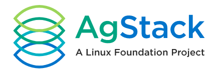
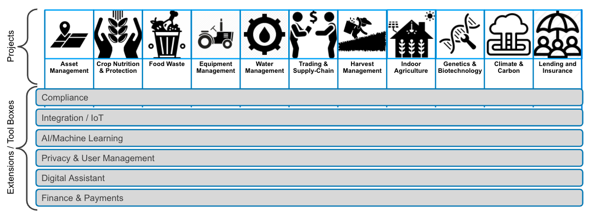
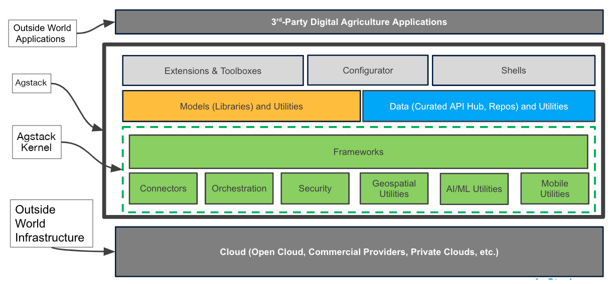
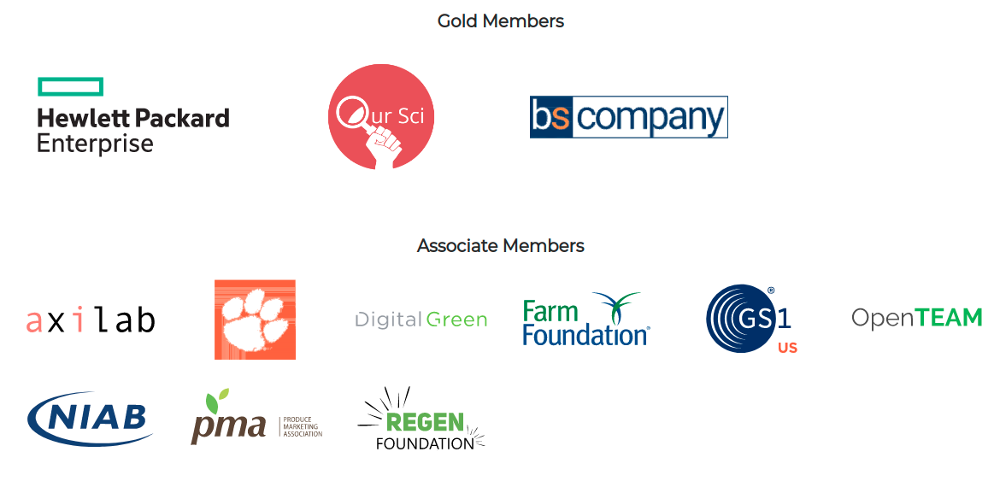

Seeks to improve global agriculture efficiency through the creation, maintenance and enhancement of free, re-usable, open and specialized digital infrastructure for data and applications.
Global agriculture is a multi-trillion-dollar ecosystem that is massively inefficient and needs a transformation:
The AgStack Foundation technical projects will be part of an overarching umbrella of technologies that will enable a rich suite of software and data tools and frameworks to enable easy and common access for content creators and content consumers for the agriculture ecosystem.



Join us at www.agstack.org